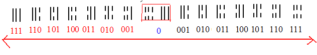

二、《有趣的逻辑数学1》
“易”其实是一套逻辑体系，一种以两种属性差异逻辑：阴与阳[]构成的逻辑模式，其逻辑点存在一套类似于计算机当中二进制计算表达形式的进位逻辑。两种阴阳属性的差异类似于有理数的正负数，却不能等同:
此为大家所熟悉的数学当中的数轴:
下面将为大家介绍一条新的数轴（在《易》的逻辑体系下）
[<1>阴数与阳数分离:]
我们定义这条新数轴的箭头指向:

阴阳数在逻辑意义上并不能等同有理数，因为阴阳是两种属性差异，这种差异以原点为中心，向两个方向递增，因而数轴箭头是双指向（在这里，我们不能简单的认为这是正负数之间的逻辑关系，而是往数轴两端呈递增关系 ）:
[用红色代替白点[阳数]
双指向逻辑原理是两种属性差异以中心原点为中心，阴数与阳数向两个方向不断扩大。我们把数轴上的数转化为二进制数，形成下列一条二进制数轴:
在二进制下，在阳数中，我们把[阳] 看作“1”， 视为0；在阴数中，则恰好与之相反。
<2>阴数与阳数和合[三横八卦图是一组既可表现为阴数又可表现为阳数的带有属性差异的图]（这里，数字用二进制表示，而运算途中，我们需要将数字转化为十进制来进行运算，得出结果后仍需再次转成二进制）:
化成十进制:
阴数与阳数混合，形成两种属性混合数表述方式如下（此处不能再用二进制的方法来理解下面的混合数，此时从左往右依次为4，2，1，而中间有间隙的一竖则在相应的数前加负号）:
每一组混合数內部进行有理和的运算， 得出下列结果:
我们把这一混合数表示为:
逆时针转动90度:
这就是中国古人所说的三划八卦横图。
在古人认识中，象数并行，数是抽象于自然物体的逻辑，古圣人同时也抽象出一个物件形的抽象逻辑，形成了一套象数并行的独特认识世界的方法。数字的表示形式更为科学客观，图像则更为直观。上述数字表述方式，可以概括为三层圆象形逻辑（上爻为外层，中爻为中层，初爻为里层）:
从这一推导过程我们可以看出，三画八卦横图其实是以0[原点]为中心，用二进制表述的两种属性差异向两个不同方向递增的过程。
三画八卦演绎到64卦其实是这一双向数轴到一个四指向座标系的展开:

[详见《有趣的逻辑数学2》]